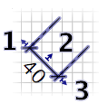

Μπορείτε να αλλάξετε τη θέση και το μέγεθος των διαστάσεων με το ποντίκι.
Για να αλλάξετε διαστάσεις, επιλέξτε τις αρχικά στο σχέδιο οικίας. Για να επιλέξετε μία διάσταση στο σχέδιο, κάντε κλικ σε αυτήν. Για να επιλέξτε πολλαπλές διαστάσεις (ή άλλα αντικείμενα) στο σχέδιο, σχεδιάστε ένα ορθογώνιο επιλογής γύρω από αυτές ή κάντε κλικ στις διαστάσεις ενώ έχετε πατημένο το πλήκτρο shift.
Για να μετακινήσετε τις επιλεγμένες διαστάσεις, τοποθετήστε τον ενδείκτη θέσης του ποντικιού σε μια από αυτές τις διαστάσεις και στη συνέχεια, σύρετε και αφήστε τις ή πατήστε τα βέλη κατεύθυνσης του πληκτρολογίου.
Όταν επιλέγετε μία διάσταση στο σχέδιο, μπορείτε επίσης:
- να μετακινήσετε το αρχικό και τελικό της σημείο με τον δείκτη μεγέθους που εμφανίζεται σε κάθε άκρο της επιλεγμένης διάστασης,
- να αλλάξετε το μέγεθος των γραμμών επέκτασης με τον δείκτη μεγέθους γραμμών επέκτασης που εμφανίζεται στο μέσο της επιλεγμένης γραμμής διάστασης.

|